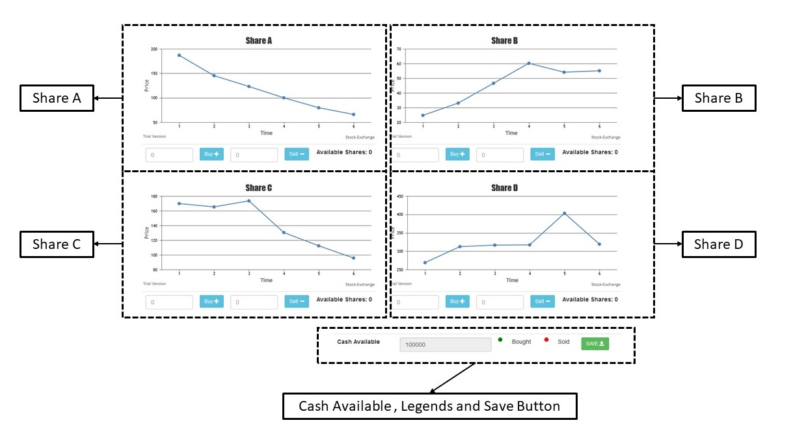
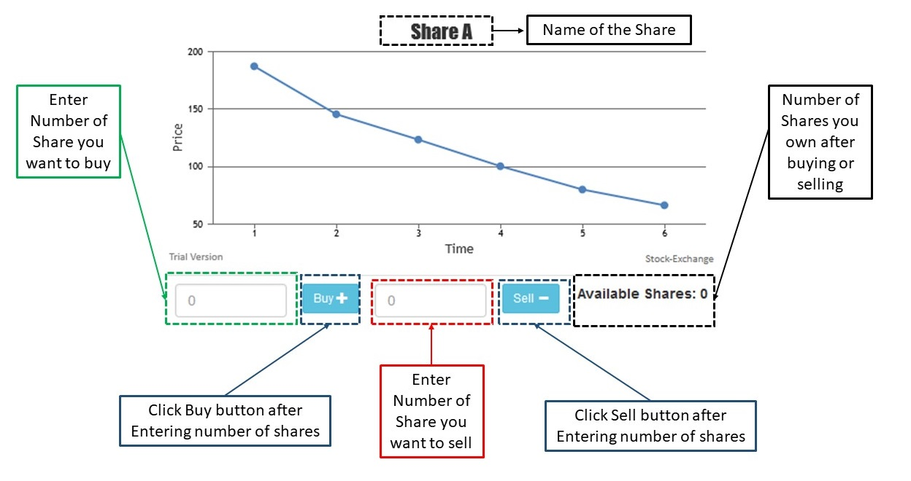
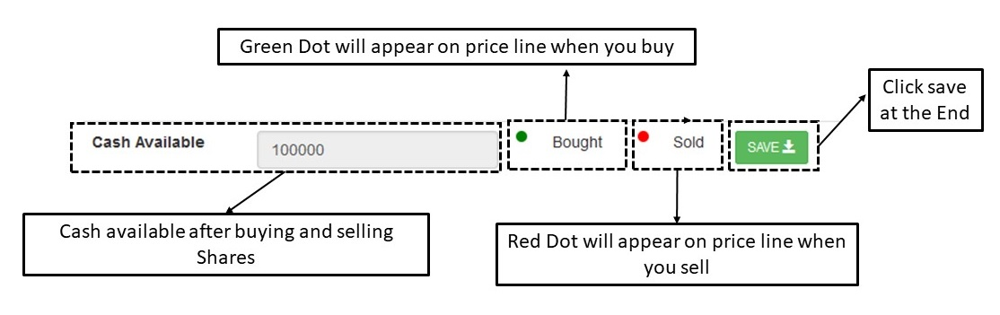

You are given virtual currency of 100,000 as your initial investment.
The aim of this exercise is to maximise your returns on an initial investment of $100,000. The timeframe of this exercise is only about 7 minutes.
This simulated stock market setting consists of only 4 stocks which we call A B C and D.

While the y-axis shows the share price, the x-axis shows the time: 28 quarters in total. The participant is requested to observe the stocks for 4 quarters and the game will only begin after the 4th quarter (i.e. when the stock reaches point 4 on the x-axis).
Your buy and sell trades, placed only after the fourth quarter, will be considered while measuring your total wealth.
The number of shares to be bought and sold have to be entered into the respective buy and sell boxes for each share separately and you need to click the blue color buy and sell button after entering the number of shares.

When a buy order is placed for any share, a green color reference point will appear on the trend line showing the price at which it was bought. Similarly, a red color reference point will appear in the case of a sell order.

If required amount of cash is not available, you will get an error message saying "Not enough Money! Can't buy"
The stock price trend will stop at quarter 28 and you have completed the exercise.
After the game ends the participant needs to click on the SAVE button and save the file locally that gets automatically generated containing the results of all the three sections. The participant can then mail the file to the below mentioned mail address.